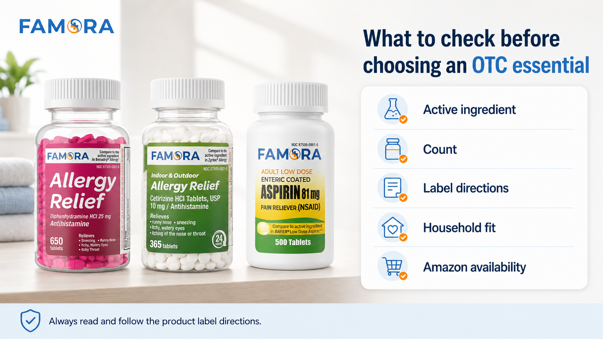

<title>How to Choose the Right OTC Medicine on Amazon — Famora</title>
<meta name="viewport" content="width=device-width, initial-scale=1" />
<!-- Google tag (gtag.js) -->
<script async src="https://www.googletagmanager.com/gtag/js?id=G-DPF7DVJCQ8"></script>
<script>
  window.dataLayer = window.dataLayer || [];
  function gtag(){dataLayer.push(arguments);}
  gtag('js', new Date());
  gtag('config', 'G-DPF7DVJCQ8');
</script>
<link rel="preconnect" href="https://fonts.googleapis.com">
<link rel="preconnect" href="https://fonts.gstatic.com" crossorigin>
<link href="https://fonts.googleapis.com/css2?family=Montserrat:wght@400;700&family=Open+Sans:wght@400;600;700&display=swap" rel="stylesheet">
<style>
  :root{
    --blue:#3786c6; --blue-deep:#1f4d73; --blue-tint:#eaf2f9;
    --orange:#fca311; --orange-deep:#e08e0a;
    --neutral:#f3f1ed; --paper:#fdfcfa; --white:#ffffff;
    --ink:#171a1d; --ink-soft:#565f66; --line:#e5e0d3;
    --display:'Montserrat','Segoe UI Semibold','Segoe UI',system-ui,sans-serif;
    --body:'Open Sans','Segoe UI',system-ui,sans-serif;
  }
  *{box-sizing:border-box;}
  html{scroll-behavior:smooth;}
  body{margin:0; background:var(--paper); color:var(--ink); font-family:var(--body); line-height:1.6; -webkit-font-smoothing:antialiased;}
  img{max-width:100%; display:block;}
  a{color:inherit;}
  .wrap{max-width:1180px; margin:0 auto; padding:0 28px;}
  h1,h2,h3{font-family:var(--display); font-weight:700; line-height:1.25; margin:0 0 14px; letter-spacing:-0.01em;}
  p{margin:0 0 16px; color:var(--ink-soft); max-width:70ch;}
  section{padding:72px 0;}

  .eyebrow{
    display:inline-flex; align-items:center; gap:9px; font-family:var(--display); font-weight:700;
    font-size:0.72rem; letter-spacing:0.13em; text-transform:uppercase; color:var(--blue-deep); margin-bottom:14px;
  }
  .eyebrow::before{content:""; width:18px; height:2px; background:var(--orange); display:inline-block; border-radius:2px;}

  .btn{
    display:inline-flex; align-items:center; gap:8px; font-family:var(--display); font-weight:700; font-size:0.9rem;
    padding:14px 26px; border-radius:9px; text-decoration:none; border:1.5px solid transparent; cursor:pointer;
    transition:transform .18s ease, box-shadow .18s ease, background .18s ease;
  }
  .btn-primary{background:var(--orange); color:#2b1a00;}
  .btn-primary:hover{background:var(--orange-deep); transform:translateY(-2px);}
  .btn-outline{border-color:var(--blue); color:var(--blue-deep); background:transparent;}
  .btn-outline:hover{background:var(--blue-tint); transform:translateY(-2px);}
  .cta-row{display:flex; gap:14px; flex-wrap:wrap; margin-top:8px;}

  /* HEADER (matches blog.html) */
  header.site{position:sticky; top:0; z-index:50; background:rgba(253,252,250,.94); backdrop-filter:blur(6px); border-bottom:1px solid var(--line);}
  .header-row{display:flex; align-items:center; justify-content:space-between; padding:16px 0; gap:24px;}
  .logo{display:flex; align-items:center; gap:2px; text-decoration:none;}
  .logo img{height:48px; width:auto; display:block;}
  nav.anchors{display:flex; gap:28px; align-items:center;}
  nav.anchors a{font-family:var(--display); font-weight:700; font-size:0.85rem; color:var(--ink-soft); text-decoration:none;}
  nav.anchors a:hover{color:var(--blue-deep);}
  nav.anchors a.current{color:var(--blue-deep);}
  .header-cta{display:flex; align-items:center; gap:14px;}
  @media (max-width:860px){ nav.anchors{display:none;} }

  /* ARTICLE HERO */
  .article-hero{padding:56px 0 40px; border-bottom:1px solid var(--line);}
  .article-hero .wrap{max-width:760px;}
  .article-hero h1{font-size:clamp(1.9rem,1.3rem+2.2vw,2.5rem);}
  .article-meta{font-family:var(--display); font-weight:700; font-size:0.82rem; color:var(--ink-soft); margin-top:2px;}
  .back-link{font-family:var(--display); font-weight:700; font-size:0.85rem; color:var(--blue-deep); text-decoration:none; display:inline-block; margin-bottom:18px;}
  .back-link:hover{text-decoration:underline;}

  /* ARTICLE BODY */
  .article-body{padding:48px 0 8px;}
  .article-body .wrap{max-width:760px;}
  .article-body h2{font-size:1.4rem; color:var(--ink); margin-top:8px;}
  .article-body p{max-width:70ch;}
  .article-list{list-style:none; margin:0 0 20px; padding:0;}
  .article-list li{position:relative; padding-left:24px; margin-bottom:16px; font-size:0.98rem; color:var(--ink-soft);}
  .article-list li::before{content:""; position:absolute; left:0; top:8px; width:8px; height:8px; border-radius:50%; background:var(--orange);}
  .article-list li strong{color:var(--ink); font-family:var(--display); font-weight:700;}
  .article-image{border-radius:16px; overflow:hidden; border:1px solid var(--line); box-shadow:0 16px 30px -22px rgba(23,26,29,.3); margin:32px 0;}
  .article-image img{width:100%; display:block;}

  /* FAQ (matches blog.html accordion) */
  .article-faq{border-top:1px solid var(--line); margin-top:24px; padding-top:8px;}
  .fm-faq-list{max-width:100%; margin:0; text-align:left;}
  .fm-faq-item{border-bottom:1px solid var(--line);}
  .fm-faq-q{
    width:100%; text-align:left; background:none; border:none; cursor:pointer;
    display:flex; align-items:center; justify-content:space-between; gap:16px;
    padding:18px 4px; font-family:'Montserrat',sans-serif; font-weight:700; font-size:1rem;
    color:var(--ink);
  }
  .fm-faq-q .fm-faq-icon{ flex-shrink:0; width:22px; height:22px; position:relative; }
  .fm-faq-q .fm-faq-icon::before, .fm-faq-q .fm-faq-icon::after{
    content:""; position:absolute; background:var(--blue); border-radius:2px;
    transition:transform .2s ease, opacity .2s ease;
  }
  .fm-faq-q .fm-faq-icon::before{ width:14px; height:2px; top:10px; left:4px; }
  .fm-faq-q .fm-faq-icon::after{ width:2px; height:14px; top:4px; left:10px; }
  .fm-faq-item.fm-open .fm-faq-icon::after{ transform:rotate(90deg); opacity:0; }
  .fm-faq-a{ max-height:0; overflow:hidden; transition:max-height .25s ease; }
  .fm-faq-a p{ font-size:0.95rem; line-height:1.65; padding:0 4px 20px; margin:0; }

  /* DISCLAIMER */
  .safety-box{background:var(--white); border:1px solid var(--line); border-left:4px solid var(--orange); border-radius:12px; padding:22px 26px; max-width:760px; margin:8px 0 0;}
  .safety-box p{margin:0; font-size:0.9rem;}

  /* FINAL CTA */
  .final-box{background:linear-gradient(135deg, var(--blue) 0%, var(--blue-deep) 100%); border-radius:26px; padding:64px 44px; text-align:center; color:#fff;}
  .final-box h2{color:#fff; max-width:26ch; margin:0 auto 14px;}
  .final-box p{color:#dcebf6; max-width:52ch; margin:0 auto 28px;}

  /* FOOTER (matches blog.html) */
  footer.site{background:var(--ink); color:#c7ccd1; padding:48px 0 28px;}
  .footer-grid{display:flex; justify-content:space-between; gap:32px; flex-wrap:wrap; padding-bottom:26px; border-bottom:1px solid #33383d;}
  .footer-logo img{height:40px; width:auto; display:block;}
  .footer-links{display:flex; gap:26px; flex-wrap:wrap;}
  .footer-links a{font-size:0.88rem; text-decoration:none; color:#c7ccd1;}
  .footer-links a:hover{color:var(--orange);}
  .footer-bottom{display:flex; justify-content:space-between; gap:16px; flex-wrap:wrap; padding-top:22px; font-size:0.78rem; color:#8a9096;}

  @media (max-width:640px){
    section{padding:48px 0;}
    .final-box{padding:44px 24px;}
    .wrap{padding:0 20px;}
  }
</style>

<header class="site">
  <div class="wrap header-row">
    <a class="logo" href="index.html"></a>
    <nav class="anchors">
      <a href="index.html#products" data-ga="product_section" data-cta-location="nav">Products</a>
      <a href="index.html#why-famora">Why Famora</a>
      <a href="blog.html" class="current">Blog</a>
      <a href="index.html#faq">FAQ</a>
    </nav>
    <div class="header-cta">
      <a class="btn btn-primary" href="https://www.amazon.com/stores/Famora/page/81160919-0D2F-41D2-94BA-65BB7147068E?lp_asin=B0GWS1F7XH&ref_=ast_bln" target="_blank" rel="noopener" data-ga="storefront" data-cta-location="header">Shop Amazon</a>
    </div>
  </div>
</header>

<main>

  <!-- ARTICLE HERO -->
  <section class="article-hero">
    <div class="wrap">
      <a class="back-link" href="blog.html">&larr; Back to Blog</a>
      <div class="eyebrow">OTC Education</div>
      <h1>How to Choose the Right OTC Medicine on Amazon: A Simple Famora Guide</h1>
      <p class="article-meta">Famora &middot; August 6, 2026</p>
    </div>
  </section>

  <!-- ARTICLE BODY -->
  <section class="article-body">
    <div class="wrap">

      <p>Shopping for over-the-counter medicine online can be convenient, but it should still come with a simple review process. Before adding any OTC essential to your cart, it helps to look at the product category, active ingredient, count, directions, warnings, and whether it fits your household&rsquo;s everyday needs.</p>

      <p>Famora was created for households that want practical OTC essentials with clear product information and convenient access through Amazon. Whether you are restocking allergy relief medicine, comparing antihistamine tablets, or adding a low dose aspirin product to your home medicine cabinet, a few quick checks can help you shop more confidently.</p>

      <p>Below is a simple guide to choosing the right Famora OTC essential on Amazon.</p>

      <h2>Start With the OTC Medicine Category</h2>
      <p>The first step is understanding what type of OTC medicine you are looking at. Famora currently offers practical household essentials across allergy relief and adult pain relief categories, including:</p>

      <ul class="article-list">
        <li><strong>Diphenhydramine HCl 25 mg Allergy Relief &mdash; 650 count.</strong> This Famora allergy relief product features Diphenhydramine HCl 25 mg, an OTC antihistamine active ingredient. It is positioned as a high-count allergy relief option for households that want practical OTC essentials available at home.</li>
        <li><strong>Cetirizine HCl 10 mg 24-Hour Allergy Relief &mdash; 365 tablets.</strong> This Famora product features Cetirizine HCl 10 mg, an OTC antihistamine active ingredient commonly associated with 24-hour allergy relief products. The 365-tablet format is designed for households that prefer to keep everyday allergy essentials stocked.</li>
        <li><strong>Low Dose Aspirin 81 mg &mdash; 500 count.</strong> This product is an adult low dose aspirin option in a 500-count format. It should be reviewed carefully before use, including directions, warnings, dosage information, and age guidance on the product label.</li>
      </ul>

      <p>Each product has a different role, so the goal is not to choose at random. Start by identifying what category fits the product you are looking for, then review the label and Amazon product details before buying.</p>

      <h2>Check the Active Ingredient</h2>
      <p>One of the most important things to review before choosing an OTC product is the active ingredient. For example, Famora offers two allergy relief products with different active ingredients: Diphenhydramine HCl 25 mg and Cetirizine HCl 10 mg.</p>
      <p>Both are common OTC antihistamine ingredients, but they are not the same product. If you are comparing diphenhydramine vs cetirizine, make sure to review the product label, directions, warnings, and usage information before deciding which option fits your needs.</p>
      <p>The active ingredient helps you understand what type of product you are buying. It is also a helpful way to compare similar OTC products on Amazon.</p>

      <h2>Review the Product Count</h2>
      <p>Another practical factor to check is the product count.</p>
      <p>Famora focuses on high-count OTC essentials designed for household restocking. Current formats include 650 count Diphenhydramine Allergy Relief, 365 tablets Cetirizine 10 mg 24-Hour Allergy Relief, and 500 count Low Dose Aspirin 81 mg.</p>
      <p>High-count formats can be useful for households that prefer to keep everyday essentials stocked at home. This does not mean every product is right for every person or every situation, but count is a practical detail to review when comparing OTC products online.</p>
      <p>Instead of only looking at the product name, check how many tablets or caplets are included and whether that format makes sense for your household.</p>

      <div class="article-image">
        
      </div>

      <h2>Read the Product Label Details</h2>
      <p>Before using any OTC medicine, always read and follow the product label directions. This includes directions, warnings, dosage information, age guidance, active ingredient, and other important product details.</p>
      <p>This step is especially important when shopping online because it is easy to focus only on the product image or count. The label gives you the information needed to understand how the product should be used.</p>
      <p>Famora&rsquo;s product pages and packaging-style visuals are designed to make key product information easier to review, but shoppers should still read the full label before use.</p>

      <h2>Think About Household Fit</h2>
      <p>A good OTC shopping decision should also consider household fit.</p>
      <p>Ask simple questions like: Is this product category relevant to my household? Who is the product intended for based on the label? Are the directions and warnings appropriate for the intended user? Does the count make sense for how my household stocks OTC essentials? Do I need allergy relief, 24-hour allergy relief, or an adult low dose aspirin product?</p>
      <p>This is not about buying every OTC product available. It is about choosing thoughtfully and keeping practical essentials organized at home.</p>

      <h2>Use Amazon Product Details Before Buying</h2>
      <p>Amazon can make it easy to compare products, but it is still important to review the details before adding an item to your cart.</p>
      <p>When looking at a Famora product listing, check the product title, active ingredient, count, product images, label information, directions and warnings, customer-facing product details, and Storefront information.</p>
      <p>This is especially helpful if you are comparing OTC allergy relief products, antihistamine tablets, or household medicine cabinet essentials.</p>

      <h2>Choose Practical OTC Essentials With Clear Information</h2>
      <p>The right OTC product decision starts with clear information. Famora keeps the shopping experience simple by offering familiar OTC categories, high-count formats, clear product details, and convenient Amazon availability.</p>
      <p>Before choosing an OTC medicine on Amazon, review the basics: product category, active ingredient, count, label directions, warnings, dosage information, and household fit.</p>
      <p>Explore Famora products through the Amazon Storefront and always read and follow the product label directions before use.</p>

      <!-- FAQ -->
      <div class="article-faq">
        <h2>FAQ</h2>
        <div class="fm-faq-list" id="afaq-list">

          <div class="fm-faq-item">
            <button class="fm-faq-q" id="afaq-q-1" aria-expanded="false" aria-controls="afaq-a-1"><span>What OTC products does Famora offer?</span><span class="fm-faq-icon" aria-hidden="true"></span></button>
            <div class="fm-faq-a" id="afaq-a-1" role="region" aria-labelledby="afaq-q-1"><p>Famora currently offers Diphenhydramine HCl 25 mg Allergy Relief, Cetirizine HCl 10 mg 24-Hour Allergy Relief, and Low Dose Aspirin 81 mg.</p></div>
          </div>

          <div class="fm-faq-item">
            <button class="fm-faq-q" id="afaq-q-2" aria-expanded="false" aria-controls="afaq-a-2"><span>Where can I buy Famora products?</span><span class="fm-faq-icon" aria-hidden="true"></span></button>
            <div class="fm-faq-a" id="afaq-a-2" role="region" aria-labelledby="afaq-q-2"><p>Famora products are available through the Famora Amazon Storefront and individual Amazon product listings.</p></div>
          </div>

          <div class="fm-faq-item">
            <button class="fm-faq-q" id="afaq-q-3" aria-expanded="false" aria-controls="afaq-a-3"><span>What should I check before choosing an OTC medicine?</span><span class="fm-faq-icon" aria-hidden="true"></span></button>
            <div class="fm-faq-a" id="afaq-a-3" role="region" aria-labelledby="afaq-q-3"><p>Review the active ingredient, product count, directions, warnings, dosage information, and age guidance on the label.</p></div>
          </div>

          <div class="fm-faq-item">
            <button class="fm-faq-q" id="afaq-q-4" aria-expanded="false" aria-controls="afaq-a-4"><span>Why does Famora offer high-count formats?</span><span class="fm-faq-icon" aria-hidden="true"></span></button>
            <div class="fm-faq-a" id="afaq-a-4" role="region" aria-labelledby="afaq-q-4"><p>High-count formats can be practical for households that prefer to keep everyday OTC essentials stocked at home.</p></div>
          </div>

          <div class="fm-faq-item">
            <button class="fm-faq-q" id="afaq-q-5" aria-expanded="false" aria-controls="afaq-a-5"><span>Should I read the label before using Famora products?</span><span class="fm-faq-icon" aria-hidden="true"></span></button>
            <div class="fm-faq-a" id="afaq-a-5" role="region" aria-labelledby="afaq-q-5"><p>Yes. Always read and follow the product label directions, warnings, dosage instructions, and age guidance before use.</p></div>
          </div>

        </div>
      </div>

      <script>
      (function(){
        var list = document.getElementById('afaq-list');
        if (!list || list.getAttribute('data-fm-bound')) return;
        list.setAttribute('data-fm-bound', 'true');
        list.querySelectorAll('.fm-faq-item').forEach(function(item){
          var btn = item.querySelector('.fm-faq-q');
          var answer = item.querySelector('.fm-faq-a');
          btn.addEventListener('click', function(){
            var isOpen = item.classList.contains('fm-open');
            list.querySelectorAll('.fm-faq-item.fm-open').forEach(function(open){
              if (open !== item){
                open.classList.remove('fm-open');
                open.querySelector('.fm-faq-a').style.maxHeight = null;
                open.querySelector('.fm-faq-q').setAttribute('aria-expanded', 'false');
              }
            });
            if (isOpen){
              item.classList.remove('fm-open');
              answer.style.maxHeight = null;
              btn.setAttribute('aria-expanded', 'false');
            } else {
              item.classList.add('fm-open');
              answer.style.maxHeight = answer.scrollHeight + 'px';
              btn.setAttribute('aria-expanded', 'true');
            }
          });
        });
      })();
      </script>

      <div class="safety-box" style="margin-top:32px;">
        <p>This content is for general educational purposes only and is not medical advice. Always read and follow product label directions.</p>
      </div>

    </div>
  </section>

  <!-- FINAL CTA -->
  <section style="padding-top:8px;">
    <div class="wrap">
      <div class="final-box">
        <h2>Stock Your Home With Practical OTC Essentials</h2>
        <p>Explore Famora Allergy Relief and everyday OTC essentials available through Amazon.</p>
        <a class="btn btn-primary" href="https://www.amazon.com/stores/Famora/page/81160919-0D2F-41D2-94BA-65BB7147068E?lp_asin=B0GWS1F7XH&ref_=ast_bln" target="_blank" rel="noopener" data-ga="storefront" data-cta-location="final_cta">Shop Famora on Amazon</a>
      </div>
    </div>
  </section>

</main>

<footer class="site">
  <div class="wrap">
    <div class="footer-grid">
      <div class="footer-logo"></div>
      <div class="footer-links">
        <a href="https://www.amazon.com/stores/Famora/page/81160919-0D2F-41D2-94BA-65BB7147068E?lp_asin=B0GWS1F7XH&ref_=ast_bln" target="_blank" rel="noopener" data-ga="storefront" data-cta-location="footer">Amazon Storefront</a>
        <a href="https://www.amazon.com/dp/B0GX2DV5KT" target="_blank" rel="noopener" data-ga="cetirizine" data-cta-location="footer">Cetirizine</a>
        <a href="https://www.amazon.com/dp/B0H3WXW44D" target="_blank" rel="noopener" data-ga="aspirin" data-cta-location="footer">Aspirin</a>
        <a href="https://www.amazon.com/dp/B0GWS1F7XH" target="_blank" rel="noopener" data-ga="diphenhydramine" data-cta-location="footer">Diphenhydramine</a>
        <a href="blog.html">Blog</a>
        <a href="legal-notice.html">Legal Notices</a>
      </div>
    </div>
    <div class="footer-bottom">
      <p style="margin:0; max-width:52ch; color:#8a9096;">Always read and follow the product label directions. Review warnings, dosage instructions, and age guidance before use. If you have questions about whether a product is right for you, consult a healthcare professional.</p>
      <span>&copy; Famora. All rights reserved.</span>
    </div>
  </div>
</footer>

<script>
(function(){
  if (window.__fmAnalyticsBound) return;
  window.__fmAnalyticsBound = true;

  var PRODUCTS = {
    diphenhydramine: { event: 'diphenhydramine_click', product_name: 'Diphenhydramine', asin: 'B0GWS1F7XH' },
    cetirizine:      { event: 'cetirizine_click',      product_name: 'Cetirizine',      asin: 'B0GX2DV5KT' },
    aspirin:         { event: 'aspirin_click',         product_name: 'Aspirin',         asin: 'B0H3WXW44D' }
  };

  function fireGtag(name, params){
    if (typeof gtag === 'function') gtag('event', name, params);
  }

  document.querySelectorAll('[data-ga]').forEach(function(el){
    el.addEventListener('click', function(){
      var key = el.getAttribute('data-ga');
      var base = {
        cta_text: el.textContent.trim(),
        cta_location: el.getAttribute('data-cta-location') || '',
        page_location: window.location.href
      };
      if (key === 'storefront'){
        fireGtag('amazon_storefront_click', Object.assign({}, base, { destination_url: el.href }));
      } else if (key === 'product_section'){
        fireGtag('product_section_click', base);
      } else if (PRODUCTS[key]){
        var p = PRODUCTS[key];
        fireGtag(p.event, Object.assign({}, base, {
          destination_url: el.href,
          product_name: p.product_name,
          asin: p.asin
        }));
      }
    });
  });

  var scroll75Fired = false;
  function checkScroll75(){
    if (scroll75Fired) return;
    var doc = document.documentElement;
    var scrollableHeight = doc.scrollHeight - window.innerHeight;
    if (scrollableHeight <= 0) return;
    var pct = (window.scrollY / scrollableHeight) * 100;
    if (pct >= 75){
      scroll75Fired = true;
      fireGtag('scroll_75', {
        percent_scrolled: 75,
        page_title: document.title,
        page_location: window.location.href
      });
      window.removeEventListener('scroll', checkScroll75);
    }
  }
  window.addEventListener('scroll', checkScroll75, { passive: true });
})();
</script>
